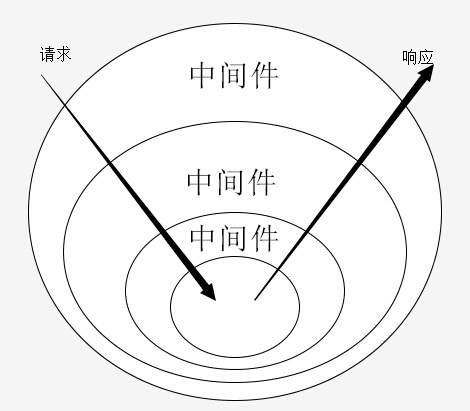
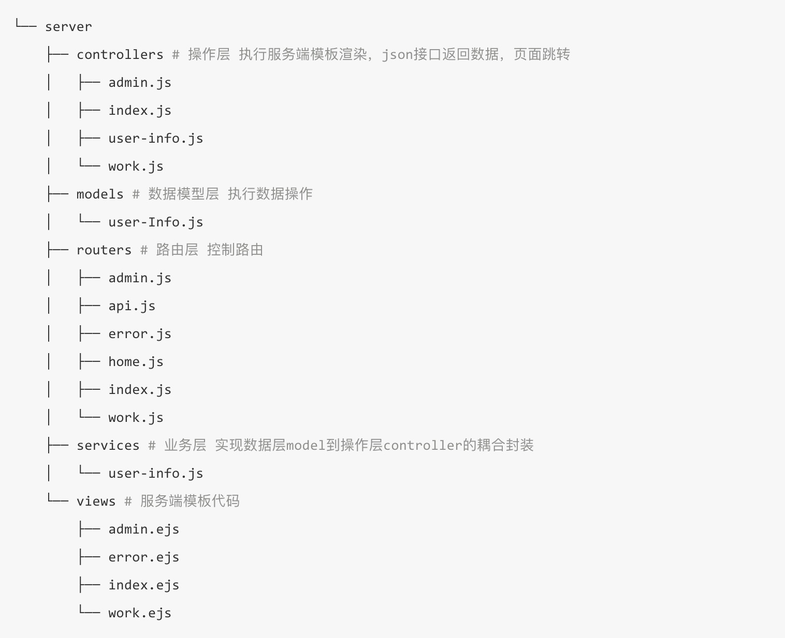

hello-koa2
koa入手先知
Koa 是一个新的 web 框架，由 Express 幕后的原班人马打造， 致力于成为 web 应用和 API 开发领域中的一个更小、更富有表现力、更健壮的基石。 通过利用 async 函数，Koa 帮你丢弃回调函数，并有力地增强错误处理。 Koa 并没有捆绑任何中间件， 而是提供了一套优雅的方法，帮助您快速而愉快地编写服务端应用程序。
koa的路由中间件需要安装koa-router模块来实现
koa安装
- 首先你要确定你已经安装的nodeJS
1 | node -v |
- 创建空文件夹并初始化package.json包管理配置文件
1 | mkdir mykoa |
- 安装
koa2包
1 | npm install koa --save |
通过koa启动一个简单的server服务
1 | // app.js |
koa应用生成器
- 使用koa社区比较活跃的方式生成与
express-generator类似的框架
1 | npm install -g koa-generator |
- koa-generator支持
1.x与2.x的生成【建议与时俱进】
1 | koa2 myapp |
- 安装依赖包
1 | cd myapp |
- 启动服务
1 | npm start |
koa实例方法
- app.use 注册中间件
- app.callback 返回适用于 http.createServer() 方法的回调函数来处理请求
- app.keys 设置签名的 Cookie 密钥
- app.context app.context 是从其创建 ctx 的原型。您可以通过编辑 app.context 为 ctx 添加其他属性。
- app.listen 绑定端口
koa核心成员 ctx
- Request
- ctx.req
node的request对象 - ctx.request
koa的Request原始对象 - ctx.header 请求标头对象
- ctx.header= 设置请求标头对象
- ctx.headers 请求标头对象【别名 ctx.header 】
- ctx.headers= 设置标头对象【别名 ctx.header= 】
- ctx.method 请求方法
- ctx.method= 设置请求方法，对于实现诸如
methodOverride()的中间件是有用的。 - ctx.url 获取请求
URL - ctx.url= 设置请求
URL, 对url重写有用。 - ctx.originalUrl 获取请求原始URL。
- ctx.origin 获取
URL的来源，包括protocol和host。 - ctx.href 获取完整的链接地址
- ctx.length 返回以数字返回请求的
Content-Length，或undefined。 - ctx.path 获取请求路径名。
- ctx.path= 设置请求路径名，并在存在时保留查询字符串。
- ctx.query 获取解析的查询字符串, 当没有查询字符串时，返回一个空对象。
- ctx.query= 将查询字符串设置为给定对象。
- ctx.querystring 根据 ? 获取原始查询字符串.
- ctx.querystring= 设置原始查询字符串。
- ctx.host 获取当前主机
（hostname:port）。当app.proxy是true时支持X-Forwarded-Host，否则使用Host。 - ctx.charset 在存在时获取请求字符集，或者 undefined
- ctx.hostname 存在时获取主机名。当
app.proxy是true时支持X-Forwarded-Host，否则使用Host。 - ctx.fresh 检查请求缓存是否
“新鲜”，也就是内容没有改变。此方法用于If-None-Match / ETag, 和If-Modified-Since和Last-Modified之间的缓存协商。 在设置一个或多个这些响应头后应该引用它。 - ctx.stale 与
request.fresh相反 - ctx.search 根据
?获取原始查询字符串【不包括？】 - ctx.socket 返回请求套接字。
- ctx.protocol 返回请求协议，
“https”或“http”。当app.proxy是true时支持X-Forwarded-Proto。 - ctx.secure 通过 ctx.protocol == “https” 来检查请求是否通过 TLS 发出。
- ctx.ip 请求远程地址。 当 app.proxy 是 true 时支持 X-Forwarded-Proto。
- ctx.ips 当
X-Forwarded-For存在并且app.proxy被启用时，这些ips的数组被返回，从上游 - >下游排序。 禁用时返回一个空数组。 - ctx.subdomains 将子域返回为数组。
- ctx.is()
- ctx.type= 设置返回的数据类型
- ctx.type 获取请求
Content-Type不含参数"charset"。 - ctx.accepts()
- ctx.acceptsEncodings()
- ctx.acceptsCharsets()
- ctx.acceptsLanguages()
- ctx.get()
- ctx.req
- Response
- ctx.res
node的request对象 - ctx.response
koa的Response对象【推荐使用】 - ctx.body=
- ctx.status=
- ctx.message=
- ctx.length= 返回以数字返回请求的 Content-Length，或 undefined。
- ctx.type= 设置返回的数据类型
- ctx.throw() 设置错误信息返回给前台，并终止程序
- ctx.assert() 断言判断
- ctx.headerSent
- ctx.redirect()
- ctx.attachment()
- ctx.set() 设置响应标头 field 到 value:
- ctx.append()
- ctx.remove()
- ctx.lastModified=
- ctx.etag=
- ctx.res
- state
- ctx.state 推荐使用的命名空间，可以挂载一些公用的数据
1 | ctx.state.user = await User.find(id); |
cookies
- ctx.cookies.get 获取
cookie的name - ctx.cookies.set 设置
cookie的相关信息- axAge 一个数字表示从
Date.now()得到的毫秒数 - signed cookie 签名值
- expires cookie 过期的 Date
- path cookie 路径, 默认是
'/' - domain
cookie域名 - secure 安全
cookie - httpOnly 服务器可访问
cookie, 默认是true - overwrite 一个布尔值，表示是否覆盖以前设置的同名的
cookie(默认是false). 如果是true, 在同一个请求中设置相同名称的所有Cookie（不管路径或域）是否在设置此Cookie时从Set-Cookie标头中过滤掉。
- axAge 一个数字表示从
- ctx.cookies.get 获取
throw
- ctx.throw 创建错误 - http-errors
1 | ctx.throw(400); |
- assert
- ctx.assert 断言模块 - http-assert
1 | ctx.assert(ctx.state.user, 401, 'User not found. Please login!'); |
同一个应用程序同时作为 HTTP 和 HTTPS 或多个地址
1 | const http = require('http'); |
koa 最经典的 洋葱模型
- 使用
next()向下传递的时候一定要使用await去修饰

1 | app.use(async (ctx, next) => { |
koa 静态资源处理
- 使用第三方中间件
koa-static- maxage 缓存时间
- index 默认文件
1 | npm install koa-static -D |
1 | const koa = require('koa'); |
根据文件类型做 静态资源缓存
1 | let staticRouter = new Router(); |
koa 处理 get 请求
1 | router.get('/get', async ctx => { |
koa 处理 动态路由 请求
1 | router.get('/get/:id', async ctx => { |
get 传参与 动态路由 的区别
- get 传参 （urlencoded）
- 顺序可以调整
- 参数可以省略
- 不利于
SEO
- params 传参（动态路由）
- 顺序固定
- 参数固定
- 利于
SEO
koa 处理 post 请求
1 | const bodyParser = require('koa-bodyparser'); |
koa 处理 图片 请求
1 | const fs= require('fs'); |
koa 处理 文件上传 请求
- 使用
form表单上传文件，一定要开启enctype="multipart/form-data" - 使用
koa-better-body处理 post + 文件上传
1 | <form action="/upload" method="post" enctype="multipart/form-data"> |
1 |
|
koa 处理 文件下载 请求
1 | const fs= require('fs'); |
koa 处理 cookie
- koa提供了从上下文直接读取、写入cookie的方法
- ctx.cookies.get(name, [options]) 读取上下文请求中的cookie
- ctx.cookies.set(name, value, [options]) 在上下文中写入cookie
- app.keys 设置签名的 Cookie 密钥
- ctx.cookies.set(‘user’,’blue’,{signed: true}) 设置的时候需要开启
- ctx.cookies.get(‘user’,{signed: true}) 获取的时候也要开启
1 | // 获取 cookie |
koa 实现session
- koa2 只提供了
cookie没有原生的提供session所以需要自己编写或者使用第三方插件- 如果session数据量很小，可以直接存在内存中
- 如果session数据量很大，则需要存储介质存放session数据
- 数据库存储方案
- 将session存放在MySQL数据库中
- 需要用到中间件
- koa-session-minimal 适用于koa2 的session中间件，提供存储介质的读写接口 。
- koa-mysql-session 为koa-session-minimal中间件提供MySQL数据库的session数据读写操作。
- 将sessionId和对于的数据存到数据库
- 将数据库的存储的sessionId存到页面的cookie中 【不建议】
- 根据cookie的sessionId去获取对于的session信息
1 | const Koa = require('koa'); |
1 | const jsonp = require('koa-jsonp'); |
koa 模板引擎 【需要 views 中间件支持】
- 安装 views 中间件
1 | npm install --save koa-views |
- ejs
1 | npm install ejs --save |
- 设置渲染引擎
1 | app.use(views(path.join(__dirname, './views'), { |
- 创建一个简单的index.ejs骨架
1 | <html> |
- 根据路由传递参数，并渲染页面
1 | router.get('/ejs', async ctx => { |
koa 进行测试
- 第三方相关库
- mocha 模块是测试框架
- chai 模块是用来进行测试结果断言库，比如一个判断 1 + 1 是否等于 2
- supertest 模块是http请求测试库，用来请求API接口
1 | npm install mocha chai supertest --save-dev |
- 编写测试用例
1 | // test/index.test.js |
- 执行测试用例
- 如果使用的是
webstrom可以配置执行脚本 - 如果全局安装的
mocha可在当前文件夹直接执行mocha - 如果是临时安装 需要执行
./node_modules/.bin/mocha
- 如果使用的是
经典目录架构

通过 session 来进行用户登录权限判断
- 使用
session中间件 - 登录以后存储
session并设置
1 | let session = ctx.session; |
- 做路由判断
1 | // 判断是否有session |
koa 与 mysql 结合
- 使用 co-mysql 进行 async 异步的同步式编写
1 | const koa = require('koa'); |
感谢您的阅读，本文由 cheng 版权所有。如若转载，请注明出处：cheng（https://18600917746.github.io/2019/01/21/hello-koa2/）